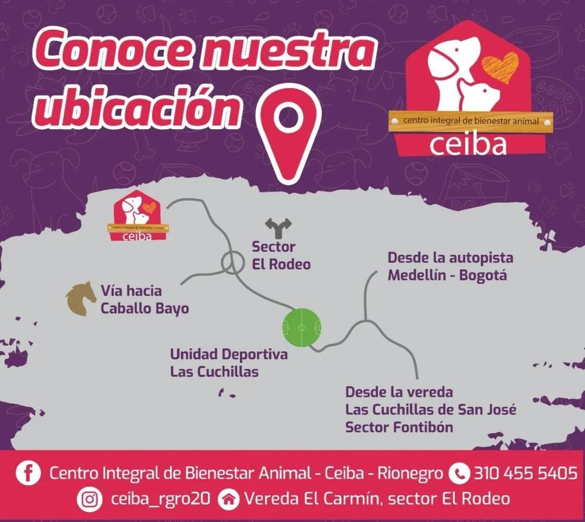

Centro Integral de Bienestar Animal CEIBA
Trabajamos por los caninos y felinos más vulnerables de las áreas urbanas y rurales de nuestro municipio. Fomentamos la tenencia responsable de animales de compañía y semovientes como vacas, caballos, burros entre otros.

Misión
Tu texto de misión puede ir aquí. Puedes describir la misión de tu proyecto de adopción de animales de manera detallada.
Visión
Tu texto de visión puede ir aquí. Puedes describir la visión de tu proyecto de adopción de animales de manera detallada.


Ubicación
Estado ubicados en la vereda El Carmin, sector El Rodeo.